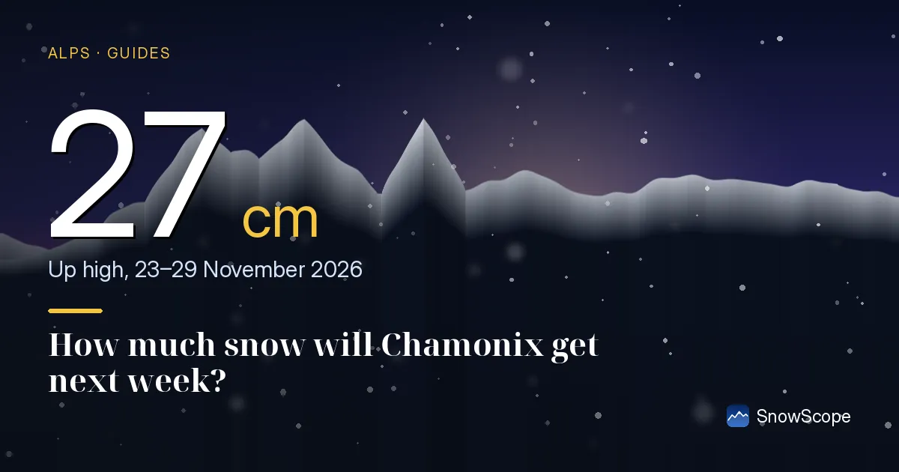

How much snow will Chamonix get next week? 27 cm up high, 23–29 November 2026
Wednesday 25 November is the day to circle for Chamonix. It carries the biggest single share of next week's snow, and over the whole week of 23–29 November the top around 2700 m collects 27 cm (8–46 cm) while the base gets 14 cm.
See the live snow forecast for Chamonix in the SnowScope appSnow depth, powder alerts and the 3D map, free.

What falls where on the Chamonix slopes
At the top (around 2700 m) the week totals 27 cm, 8–46 cm across our range. Mid-mountain around 2000 m gets 25 cm (7–42 cm), and the base around 1200 m 14 cm (2–25 cm).
The snow is not spread evenly. The days that matter at the top are Tuesday 24 (4 cm, up to 9), Wednesday 25 (7 cm, up to 11), Thursday 26 (5 cm, up to 9) and Sunday 29 (5 cm, up to 8); the rest of the week is close to dry.
Confidence, in plain words
Treat this one with caution: 8 cm at the low end, 46 cm at the high end. A spread that wide a week out means the storm may still slide away from Chamonix or sit right over it.
Storm timing tends to firm up first; totals keep moving until a day or two before.
Picking your day in Chamonix
Wednesday 25 November brings the most, 7 cm at the top and 11 cm at best: enough to soften the pistes, not enough for a powder day.
Go high: depth is safest on Les Grands Montets above Argentière, the highest lift-served terrain in the valley, and the best skiing should be on the north-facing upper bowls of the Grands Montets, which keep cold snow long after the sunny side has crusted. Treat Brévent and Flégère across the valley face south, so new snow there settles and softens much faster as the weak point.
Next door, the same week
Same week, same measure (top of each resort): Courmayeur (18 km away) 26 cm; Flaine (20 km away) 27 cm; Megève (25 km away) 27 cm. Chamonix itself: 27 cm.
Nothing to separate them on snow alone; the choice comes down to the terrain you want.
Where the snow line sits
Half-and-half at the bottom: 14 cm near 1200 m is a fair amount, but well short of the top's 27 cm. Mild spells will turn the lowest runs heavy and sticky.
The valley floor around the town is low and often wet in a mild spell while the needles above stay white.
This week in Chamonix: the set-up
Before next week even starts, Chamonix should be holding a deep fresh layer up high: 92 cm from Tuesday 17 to Friday 20 November (73–112 cm), while the base sees 3 cm. The second storm then builds on it.
Tips for skiers
- Fresh snow on a young snowpack: read the French avalanche bulletin (BERA) for the massif before any off-piste plan.
- Check the resort's own opening date and lift status: snow on the mountain does not mean lifts are running.
- Plan around the top's 27 cm, and keep the high case of 46 cm as a bonus.
More maps (external sites)
About these numbers
Snow numbers: our two-week snow forecast issued on 16 November 2026, read at three heights of the resort (top, mid-mountain, base). Each total is the middle of a range, with a low and a high case. These are estimates for the slopes, not resort measurements, and forecasts move from day to day: check the live map before you go.
Cite this report
For research, teaching or the press: the numbers and charts are free to reuse under CC BY 4.0 with this citation.
SnowScope (2026), How much snow will Chamonix get next week? 27 cm up high, 23–29 November 2026, https://snowscope.app/blog/en/2026/11/chamonix-powder-forecast-next-week-23-29-november-2026.html, accessed 2026-11-16
SnowScope (Atlas Labs). (2026, November 16). How much snow will Chamonix get next week? 27 cm up high, 23–29 November 2026. SnowScope snow reports. https://snowscope.app/blog/en/2026/11/chamonix-powder-forecast-next-week-23-29-november-2026.html
BibTeX
@misc{snowscope2026chamonixpowderforecastne,
author = {{SnowScope (Atlas Labs)}},
title = {How much snow will Chamonix get next week? 27 cm up high, 23–29 November 2026},
year = {2026},
month = nov,
howpublished = {\url{https://snowscope.app/blog/en/2026/11/chamonix-powder-forecast-next-week-23-29-november-2026.html}},
note = {Published 2026-11-16 11:15 UTC; accessed 2026-11-16}
}· CC BY 4.0 · Methods, data and tools →
Chamonix: snow and temperature by height, this winter vs last (tools) →
Follow Chamonix
Free: a message when fresh snow is coming, and the forecast every morning.
More snow reports

96 cm of new snow forecast for Les Arcs over the next three days, with today bringing the heaviest falls; model run November 16.

50 cm on the upper slopes: that is why La Grave heads our list. We combined today's snow depth, the new snow of the last 72 hours and the forecast to …

Saint François Longchamp sits at just 3 cm of snow, 12% of usual depth for this time, but 110 cm is forecast in the next two weeks.